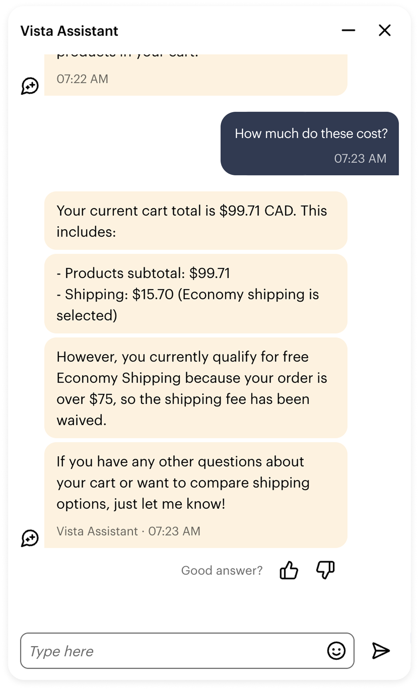
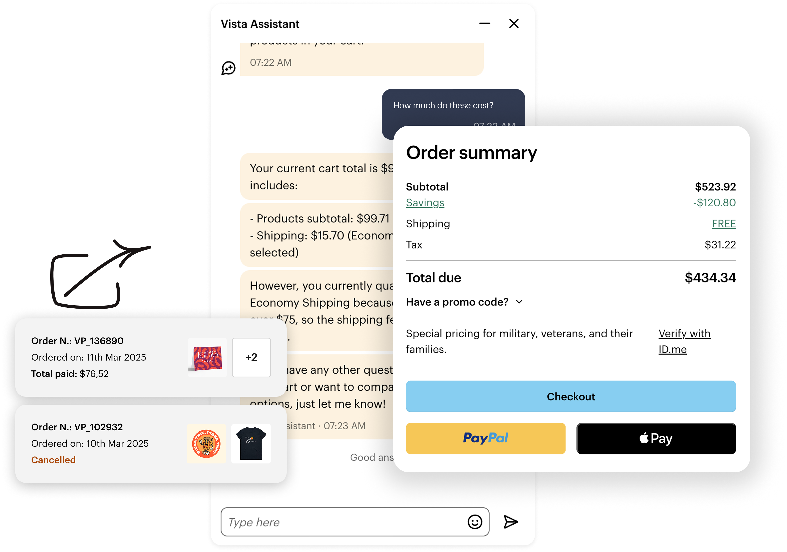
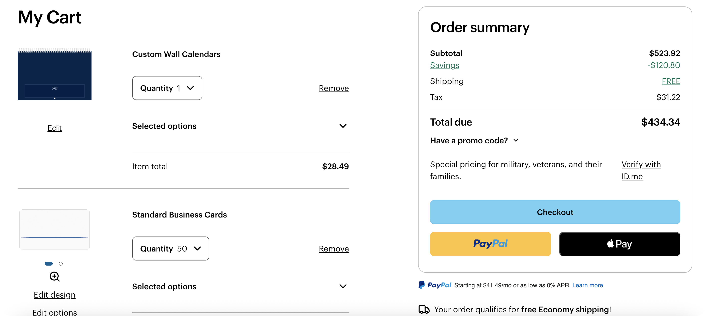
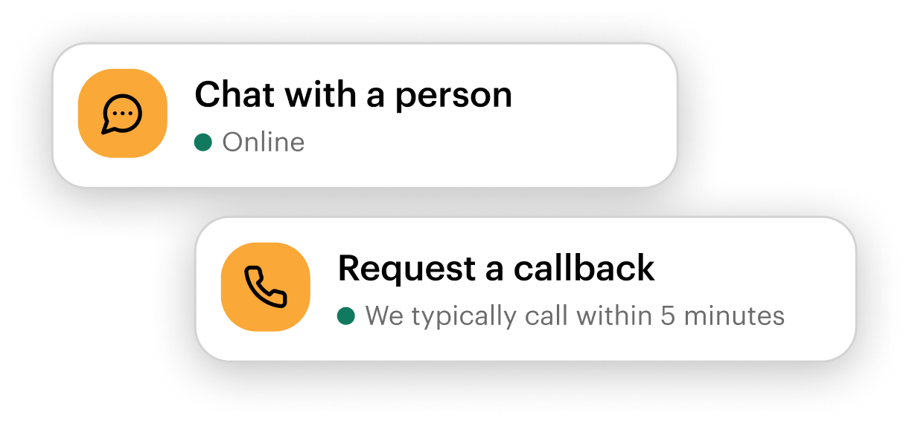

What the customer sees
Conversation

01 — AI + SERVICE DESIGN
Evolving Vista Assistant from a conversational entry point into a connected support experience spanning AI, customer context and human specialists.

My ownership Led experience definition and interaction design for Vista Assistant across customer entry points, contextual support, automation and human handover.
Focus · Product strategy · UX · research · conversational design · experimentation
Partnered with · Product · Engineering · Research · Content · CARE Ops
The challenge
As Vista Assistant expanded, the problem shifted from designing conversations to designing how context, actions, recovery and human handover work together.
The core design question
This became the frame for the work.
01 — Trust
Customers were already forming expectations about Vista Assistant before they ever opened it.
“Usually you’ll have a bot, and then if you’re lucky, a person, but it’s almost impossible to talk to a person.”
Customers were bringing someone else's chatbot experience into ours.
We tested different support entry-point language to understand whether framing itself was influencing customer behaviour.
“Chat with us” outperformed “Need help”.
In a follow-up experiment, when Vista Assistant and live chat used the same “Chat with us” framing, overall engagement became approximately balanced — while Vista Assistant still generated more started conversations.
02 — Capability
A simple question can depend on context the customer has already provided somewhere else in the experience. Without it, AI creates more effort instead of removing it.
“I need these by Friday.”
Vista Assistant needs to connect what the customer says with what the surrounding product already knows.


Ask for what is missing —
not what the system already knows.
The system needed rules for what it could infer, what it still needed to ask, and when it could answer reliably — or should recover or hand over.
Continue with product context
Ask which product they mean
Retrieve available delivery options
Ask only for missing information
Resolve — respond or act
Recover — recover gracefully or hand over
03 — Continuity
Giving customers access to a human specialist was only part of the problem. The experience also needed to preserve what had already happened so that moving between AI and human support felt like one continuous service.

On pages where customers were explicitly offered a choice between Vista Assistant and a human specialist, preference was almost evenly split.
Chose to start with AI support.
Chose to go directly to human support.
Among customers who entered Vista Assistant, a large proportion later moved to a human specialist. That made post-entry resolution and continuity a more meaningful design problem than channel preference alone.
Vista Assistant resolved the interaction without specialist involvement.
Customers started with AI but eventually continued with a specialist.
The transition had to preserve context, make the handover explicit, and give the specialist enough information to continue without forcing the customer to repeat the problem.
Customer explains the issue and Vista Assistant gathers relevant context.
The assistant identifies that human support is needed.
The transition is made explicit rather than happening unexpectedly.
Human support starts with the relevant context already available.
The transition should preserve progress, not erase it.
What changed
Vista Assistant expanded beyond the Help Center into additional site contexts, alongside expanded availability experimentation.
New self-service flows, contextual behaviour and clearer handover logic moved the experience closer to useful action.
Experiments, transcript analysis, handover tracking and internal tooling created stronger feedback loops for deciding what to improve next.